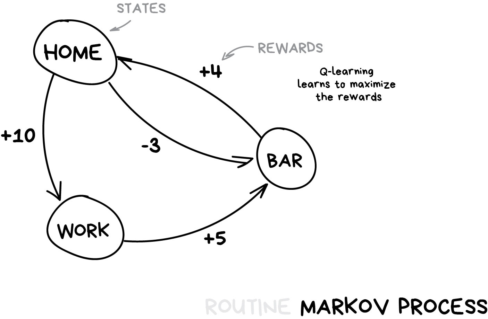
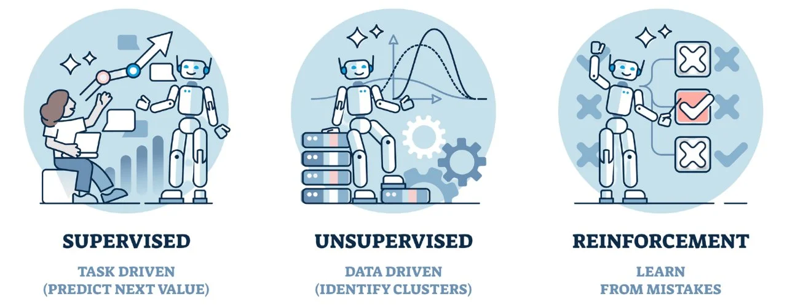

Machine learning is a type of artificial intelligence where a system is trained on historical data to recognize patterns, and then uses those patterns to make predictions or decisions about new data it has never seen before. It discovers which variables matter, how they relate to each other, and learns from outcomes over time.

When you look at a trendline on a chart, you are already doing something that ML does computationally. You are looking at where the data has been and forming an expectation about where it is going. ML does the same thing, but across thousands of variables at once, finding connections between factors that would never show up on any single chart you could build by hand.
Every transaction is scored against your spending patterns, location history, merchant categories, and time of day. The model learned from billions of transactions which combinations signal fraud, and it flags problems before the charge even finishes processing.
These platforms track what you watch, skip, replay, and finish. They compare your behavior to millions of other users to find people with similar taste profiles and predict what you will enjoy next based on what those similar users loved.
The Weather Channel and AccuWeather use ML models that continuously process satellite imagery, radar data, ground sensor readings, and historical weather patterns. The models learn which atmospheric conditions lead to which outcomes across decades of data.
Your credit score comes from pattern recognition across payment history, credit utilization, account age, and dozens of other factors. Insurance carriers use the same approach to find correlations between risk factors and claims outcomes that no human actuary could calculate manually.
